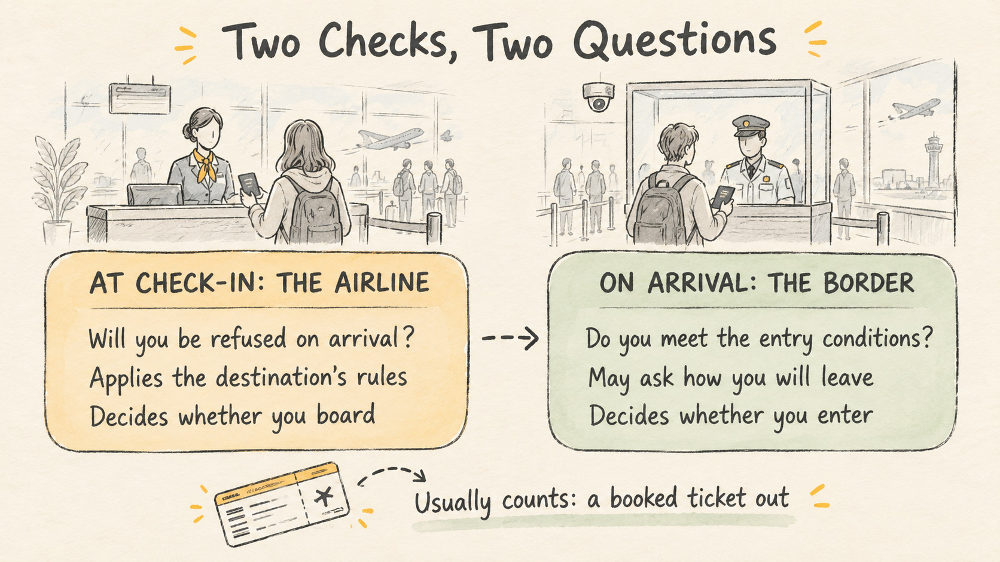

Proof of Onward Travel: What Actually Counts
Travel Document Vault
Key Takeaways
- Proof of onward travel usually means a booked ticket out of the country you're flying to, either home or on to a country you're allowed to enter.
- Two different checks ask about it. The airline checks before you board because it's generally responsible for flying you out again if you're refused entry. The border officer decides whether to admit you.
- Some destinations write onward travel into their entry rules for visitors, so an airline asking is often applying the destination's rule early.
- A hotel booking or a bank statement answers different questions, where you'll stay and how you'll support yourself, and typically doesn't stand in for a ticket out.
- Keep the confirmation somewhere you can open it at the desk without signal or a login.
In most cases, proof of onward travel is a booked ticket out of the country you're flying to. A return flight home counts, and so does a ticket on to a third country you're allowed to enter. If you already hold one of those, you have what's usually being asked for.
The rest of this guide covers the less tidy cases: a one-way trip on purpose, an open-ended plan, or an unexpected question at the desk. Most of it comes down to knowing who is asking, and why.
What Proof of Onward Travel Is, and Who Is Really Asking
Proof of onward travel is evidence that you've arranged a way to leave your destination before your permitted stay runs out. Two different people can ask to see it, and they ask for different reasons.
One is the airline, at check-in or the gate. If it carries a passenger who is then refused entry, the airline is generally responsible for flying them out again, at its own cost. So before you board, the airline checks that you appear to meet your destination's entry rules.
The other is the border officer when you land. Their job is to decide whether to admit you, and in some places evidence that you'll leave is part of that decision.
What Usually Counts as Proof
A confirmed ticket out of the country is the form most widely understood. It can be a return flight or a flight on to a third country. What matters is that it leaves before your permitted stay ends and goes somewhere you're allowed to enter.
Immigration New Zealand's guidance for visitors gives a useful picture of the range. It lists confirmed or open-dated tickets out of the country, or written confirmation from an airline or travel agency that onward travel is booked and paid for. It also accepts anything that shows a confirmed departure, such as a yacht or private aircraft leaving. Other destinations set their own lists, and they don't all match.
A hotel booking and a bank statement come up often too, but they answer different questions. One shows where you'll stay, and the other shows you can pay your way. A border officer may ask for either, though neither typically stands in for a ticket out.
The Airline Check and the Border Check Are Not the Same
The airline wants to know whether you're likely to be refused on arrival, leaving it with the cost of flying you back. A border officer is asking something related but separate: whether you meet the country's conditions for entry. The two questions overlap, but they aren't the same one.
Where they overlap is the destination's own rules. The Schengen Borders Code, for example, lists a return or round-trip ticket among the documents a border guard may ask a visitor to show. New Zealand requires visitors to have the means to leave. When a destination works like that, the airline asking at check-in is usually applying the destination's rule a few hours early, not making up one of its own.

The checks also cover different ground. An airline that accepts your onward ticket hasn't vouched for the rest of your entry, such as passport validity or a visa you might need. A border officer may not ask about onward travel at all. For the full set of documents worth having with you, see our guide to what documents to carry when travelling internationally.
Travel Document Vault stores your airline tickets and hotel reservations on your device, encrypted and accessible without signal - so you can show proof at the gate whenever asked. Download on the App Store and Google Play.
If You Are Travelling on a One-Way Ticket on Purpose
A one-way ticket isn't a problem in itself. Onward travel rules are generally written for visitors. If you're moving abroad on a visa that lets you live or work there, that visa in most cases does the job an onward ticket would. Have it to hand at check-in, along with any letter that came with it.
If you're visiting with an open-ended plan, the honest options are the simplest ones. Book the onward journey you actually expect to take. If your dates aren't fixed, a fare that lets you change the date keeps a real plan flexible without turning it into fiction.
What we'd steer clear of is a ticket you never intend to use, bought only to show at the desk. Presenting that to a border officer as your plan can amount to misrepresenting your intentions, which is a far bigger problem than a missing booking.
If You Are Asked and Cannot Produce It
If an agent asks and you have nothing to show, remember they're working from the destination's entry rules. The most useful response is usually to give them something those rules recognise.
In practice that often means booking the onward journey there and then, on your phone or at the airline's desk. It can cost more at short notice, which is the main reason to sort it out the night before. If a travel agent booked your onward trip, their written confirmation may help where the destination accepts it.
The decision at the desk sits with the airline. If you can't resolve it there, you'd need to rebook once you have what the destination asks for.
Keeping the Booking Reachable When You Need It
A booking you can't open is as unhelpful as no booking at all. The request tends to come at check-in or the gate, which is often where signal is patchy and an app wants you to sign in again.
Keep an offline copy of the confirmation: a PDF, a screenshot showing the booking reference and dates, or a copy in an app that works without a connection. Travel Document Vault stores airline tickets and hotel bookings on your device, encrypted and available offline. The confirmation is there at the desk whether or not you have signal. Our travel document checklist covers the rest of what's worth having ready.
Frequently Asked Questions
What proof of onward travel does an airline actually accept?
Most commonly, a confirmed ticket out of your destination, either home or to a third country you can enter. Some destinations also accept other evidence, such as written confirmation from a travel agency that onward travel is booked and paid for. The airline applies the destination's rules, so check those for your trip.
Can I use a hotel reservation as proof of onward travel?
A hotel booking usually doesn't work on its own. It shows where you'll stay, which a border officer may also ask about, but not how you'll leave. If your destination asks for onward travel, plan on a ticket out.
What if I do not have proof of onward travel?
If you're asked at check-in and have nothing to show, the usual fix is to book the onward journey there and then. That can cost more at short notice. The decision to board you sits with the airline, so it's worth sorting out before you reach the airport.
Is a one-way ticket a problem?
A one-way ticket isn't a problem by itself, because onward travel rules are generally aimed at visitors. If you're moving on a visa that lets you live or work in the country, that visa usually covers the question. If you're visiting, a booked onward journey you intend to take is the simplest answer.
Do I need proof of onward travel for the border?
Sometimes, because some destinations include it in their entry conditions for visitors. The Schengen Borders Code lists a return or round-trip ticket among the documents a border guard may ask for, and New Zealand requires visitors to have the means to leave. Check your destination's rules before you travel.